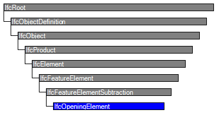

| Öffnung |
 | Opening Element |
 | Ouverture |
| Item | SPF | XML | Change | Description | 4.0.0.0 |
|---|---|---|---|---|
| IfcOpeningElement | ||||
| OwnerHistory | MODIFIED | Instantiation changed to OPTIONAL. | ||
| PredefinedType | ADDED | 4.0.1.0 | ||
| IfcOpeningElement | ||||
| HasCoverings | ADDED |
The opening element stands for opening, recess or chase, all reflecting voids. It represents a void within any element that has physical manifestation. Openings can be inserted into walls, slabs, beams, columns, or other elements.
There are two main representations for opening elements:
NOTE The entity IfcOpeningStandardCase has been deprecated.
NOTE Model View Definitions may restrict the types of elements which can be voided by an IfcOpeningElement
There are two different types of opening elements:
The attribute PredefinedType should be used to capture the differences,
An IfcOpeningElement has to be inserted into an IfcElement by using the IfcRelVoidsElement relationship. It may be filled by an IfcDoor, IfcWindow, or another filling element by using the relationship IfcRelFillsElements. Depending on the type of the IfcShapeRepresentation of the IfcOpeningElement the voiding relationship implies:
The IfcOpeningElement shall not participate in the containment relationship, i.e. it is not linked directly to the spatial structure of the project. It has a mandatory VoidsElements inverse relationship pointing to the IfcElement that is contained in the spatial structure.
NOTE See IfcRelVoidsElement for a diagram on how to apply spatial containment and the voiding relationship.
HISTORY New entity in IFC1.0
IFC2x CHANGE The intermediate ABSTRACT supertypes IfcFeatureElement and IfcFeatureSubtraction have been added.
IFC4 CHANGE The attribute PredefinedType has been added at the end of attribute list. It should be used instead of the inherited attribute ObjectType from now on.
| # | Attribute | Type | Cardinality | Description | R |
|---|---|---|---|---|---|
| 9 | PredefinedType | IfcOpeningElementTypeEnum | ? |
Predefined generic type for an opening that is specified in an enumeration. There may be a property set given specificly for the predefined types.
IFC4 CHANGE The attribute has been added at the end of the entity definition. | X |
| HasFillings | IfcRelFillsElement @RelatingOpeningElement | S[0:?] | Reference to the Filling Relationship that is used to assign Elements as Fillings for this Opening Element. The Opening Element can be filled with zero-to-many Elements. | X |

| # | Attribute | Type | Cardinality | Description | R |
|---|---|---|---|---|---|
| IfcRoot | |||||
| 1 | GlobalId | IfcGloballyUniqueId | Assignment of a globally unique identifier within the entire software world. | X | |
| 2 | OwnerHistory | IfcOwnerHistory | ? |
Assignment of the information about the current ownership of that object, including owning actor, application, local identification and information captured about the recent changes of the object,
NOTE only the last modification in stored - either as addition, deletion or modification. IFC4 CHANGE The attribute has been changed to be OPTIONAL. | X |
| 3 | Name | IfcLabel | ? | Optional name for use by the participating software systems or users. For some subtypes of IfcRoot the insertion of the Name attribute may be required. This would be enforced by a where rule. | X |
| 4 | Description | IfcText | ? | Optional description, provided for exchanging informative comments. | X |
| IfcObjectDefinition | |||||
| HasAssignments | IfcRelAssigns @RelatedObjects | S[0:?] | Reference to the relationship objects, that assign (by an association relationship) other subtypes of IfcObject to this object instance. Examples are the association to products, processes, controls, resources or groups. | X | |
| Nests | IfcRelNests @RelatedObjects | S[0:1] | References to the decomposition relationship being a nesting. It determines that this object definition is a part within an ordered whole/part decomposition relationship. An object occurrence or type can only be part of a single decomposition (to allow hierarchical strutures only).
IFC4 CHANGE The inverse attribute datatype has been added and separated from Decomposes defined at IfcObjectDefinition. | ||
| IsNestedBy | IfcRelNests @RelatingObject | S[0:?] | References to the decomposition relationship being a nesting. It determines that this object definition is the whole within an ordered whole/part decomposition relationship. An object or object type can be nested by several other objects (occurrences or types).
IFC4 CHANGE The inverse attribute datatype has been added and separated from IsDecomposedBy defined at IfcObjectDefinition. | X | |
| HasContext | IfcRelDeclares @RelatedDefinitions | S[0:1] | References to the context providing context information such as project unit or representation context. It should only be asserted for the uppermost non-spatial object.
IFC4 CHANGE The inverse attribute datatype has been added. | ||
| IsDecomposedBy | IfcRelAggregates @RelatingObject | S[0:?] | References to the decomposition relationship being an aggregation. It determines that this object definition is whole within an unordered whole/part decomposition relationship. An object definitions can be aggregated by several other objects (occurrences or parts).
IFC4 CHANGE The inverse attribute datatype has been changed from the supertype IfcRelDecomposes to subtype IfcRelAggregates. | X | |
| Decomposes | IfcRelAggregates @RelatedObjects | S[0:1] | References to the decomposition relationship being an aggregation. It determines that this object definition is a part within an unordered whole/part decomposition relationship. An object definitions can only be part of a single decomposition (to allow hierarchical strutures only).
IFC4 CHANGE The inverse attribute datatype has been changed from the supertype IfcRelDecomposes to subtype IfcRelAggregates. | X | |
| HasAssociations | IfcRelAssociates @RelatedObjects | S[0:?] | Reference to the relationship objects, that associates external references or other resource definitions to the object.. Examples are the association to library, documentation or classification. | X | |
| IfcObject | |||||
| 5 | ObjectType | IfcLabel | ? |
The type denotes a particular type that indicates the object further. The use has to be established at the level of instantiable subtypes. In particular it holds the user defined type, if the enumeration of the attribute PredefinedType is set to USERDEFINED.
| X |
| IsTypedBy | IfcRelDefinesByType @RelatedObjects | S[0:1] | Set of relationships to the object type that provides the type definitions for this object occurrence. The then associated IfcTypeObject, or its subtypes, contains the specific information (or type, or style), that is common to all instances of IfcObject, or its subtypes, referring to the same type.
IFC4 CHANGE New inverse relationship, the link to IfcRelDefinesByType had previously be included in the inverse relationship IfcRelDefines. Change made with upward compatibility for file based exchange. | X | |
| IsDefinedBy | IfcRelDefinesByProperties @RelatedObjects | S[0:?] | Set of relationships to property set definitions attached to this object. Those statically or dynamically defined properties contain alphanumeric information content that further defines the object.
IFC4 CHANGE The data type has been changed from IfcRelDefines to IfcRelDefinesByProperties with upward compatibility for file based exchange. | X | |
| IfcProduct | |||||
| 6 | ObjectPlacement | IfcObjectPlacement | ? | Placement of the product in space, the placement can either be absolute (relative to the world coordinate system), relative (relative to the object placement of another product), or constraint (e.g. relative to grid axes). It is determined by the various subtypes of IfcObjectPlacement, which includes the axis placement information to determine the transformation for the object coordinate system. | X |
| 7 | Representation | IfcProductRepresentation | ? | Reference to the representations of the product, being either a representation (IfcProductRepresentation) or as a special case a shape representations (IfcProductDefinitionShape). The product definition shape provides for multiple geometric representations of the shape property of the object within the same object coordinate system, defined by the object placement. | X |
| IfcElement | |||||
| 8 | Tag | IfcIdentifier | ? | The tag (or label) identifier at the particular instance of a product, e.g. the serial number, or the position number. It is the identifier at the occurrence level. | X |
| FillsVoids | IfcRelFillsElement @RelatedBuildingElement | S[0:1] | Reference to the IfcRelFillsElement Relationship that puts the element as a filling into the opening created within another element. | ||
| HasOpenings | IfcRelVoidsElement @RelatingBuildingElement | S[0:?] | Reference to the IfcRelVoidsElement relationship that creates an opening in an element. An element can incorporate zero-to-many openings. For each opening, that voids the element, a new relationship IfcRelVoidsElement is generated. | X | |
| ContainedInStructure | IfcRelContainedInSpatialStructure @RelatedElements | S[0:1] | Containment relationship to the spatial structure element, to which the element is primarily associated. This containment relationship has to be hierachical, i.e. an element may only be assigned directly to zero or one spatial structure. | X | |
| IfcFeatureElement | |||||
| IfcFeatureElementSubtraction | |||||
| VoidsElements | IfcRelVoidsElement @RelatedOpeningElement | Reference to the Voids Relationship that uses this Opening Element to create a void within an Element. The Opening Element can only be used to create a single void within a single Element. | |||
| IfcOpeningElement | |||||
| 9 | PredefinedType | IfcOpeningElementTypeEnum | ? |
Predefined generic type for an opening that is specified in an enumeration. There may be a property set given specificly for the predefined types.
IFC4 CHANGE The attribute has been added at the end of the entity definition. | X |
| HasFillings | IfcRelFillsElement @RelatingOpeningElement | S[0:?] | Reference to the Filling Relationship that is used to assign Elements as Fillings for this Opening Element. The Opening Element can be filled with zero-to-many Elements. | X | |
Property Sets for Objects
The Property Sets for Objects concept template applies to this entity as shown in Table 26.
| ||||||||||||||||||||||||||||
Table 26 — IfcOpeningElement Property Sets for Objects |
Product Local Placement
The Product Local Placement concept template applies to this entity as shown in Table 27.
| ||||||
Table 27 — IfcOpeningElement Product Local Placement |
Placement of elements is defined by a local placement (a transformation matrix relative to):
The local placement shall always be relative.
Reference Geometry General
The Reference Geometry General concept applies to this entity.
Reference Tessellation Geometry
The Reference Tessellation Geometry concept applies to this entity.
Since there are no Boolean operations, either as IfcBooleanResult or implicitly by IfcRelVoidsElement the geometry of the IfcOpeningElement shall not be used to subtract the opening from the 'Body' shape representation of the voided element.
Reference SweptSolid PolyCurve Geometry
The Reference SweptSolid PolyCurve Geometry concept applies to this entity.
Since there are no Boolean operations, either as IfcBooleanResult or implicitly by IfcRelVoidsElement the geometry of the IfcOpeningElement shall not be used to subtract the opening from the 'Body' shape representation of the voided element.
Quantity Sets
The Quantity Sets concept template applies to this entity as shown in Table 28.
| ||||||||||||||||||||||||||||||||||||
Table 28 — IfcOpeningElement Quantity Sets |
Element Decomposition
The Element Decomposition concept (defined at a supertype) does NOT apply to this entity.
Element Composition
The Element Composition concept (defined at a supertype) does NOT apply to this entity.
Spatial Containment
The Spatial Containment concept (defined at a supertype) does NOT apply to this entity.
Mapped Geometry
The Mapped Geometry concept template applies to this entity as shown in Table 29.
Table 29 — IfcOpeningElement Mapped Geometry |
Material Single
The Material Single concept (defined at a supertype) does NOT apply to this entity.
Body SweptSolid PolyCurve Geometry
The Body SweptSolid PolyCurve Geometry concept (defined at a supertype) does NOT apply to this entity.
Body Tessellation Geometry
The Body Tessellation Geometry concept (defined at a supertype) does NOT apply to this entity.
Body Geometry General
The Body Geometry General concept (defined at a supertype) does NOT apply to this entity.
Object Typing
The Object Typing concept (defined at a supertype) does NOT apply to this entity.
<?xml version="1.0"?>
<ConceptRoot xmlns:xsi="http://www.w3.org/2001/XMLSchema-instance" xmlns:xsd="http://www.w3.org/2001/XMLSchema" uuid="811de174-15b7-4a91-a3bd-de944bd54f92" name="IfcOpeningElement" status="sample" applicableRootEntity="IfcOpeningElement">
<Applicability uuid="00000000-0000-0000-0000-000000000000" status="sample">
<Template ref="11fdcc4d-0d82-47ef-b03e-c4f5026d12f2" />
<TemplateRules operator="and" />
</Applicability>
<Concepts>
<Concept uuid="875ad4c2-da05-4805-a634-2f835d344d8a" name="Property Sets for Objects" status="sample" override="true">
<Template ref="f74255a6-0c0e-4f31-84ad-24981db62461" />
<TemplateRules operator="and">
<TemplateRule Parameters="PsetName=Pset_OpeningElementCommon;" />
</TemplateRules>
</Concept>
<Concept uuid="729d5b33-2ec2-4387-9c29-29493ce4b9d5" name="Product Local Placement" status="sample" override="false">
<Template ref="cbe85b5f-7912-4a43-8bb7-1e63bf40b26d" />
<TemplateRules operator="and">
<TemplateRule Description="Placement relative to the position and rotation of the element being voided." Parameters="HasPlacement=IfcLocalPlacement;RelativeToElement=IfcElement;" />
</TemplateRules>
</Concept>
<Concept uuid="0dc31497-009e-4b56-a350-08683922fbc0" name="Reference Geometry General" status="sample" override="false">
<Template ref="2a556af4-4b5b-43f8-833a-8a183800b19a" />
</Concept>
<Concept uuid="54ed95f6-c025-4e72-a2cd-8b5953ef7660" name="Reference Tessellation Geometry" status="sample" override="false">
<Template ref="c10a7cd4-27e6-465f-a76e-da460daed660" />
</Concept>
<Concept uuid="b864a12d-cd00-47c7-b517-b867d9d7825a" name="Reference SweptSolid PolyCurve Geometry" status="sample" override="false">
<Template ref="903ec934-3d30-4988-a9ab-21815fc634d7" />
</Concept>
<Concept uuid="bd9531e3-cdc2-4940-9fd8-efb2bcc88fbe" name="Quantity Sets" status="sample" override="false">
<Template ref="6652398e-6579-4460-8cb4-26295acfacc7" />
<TemplateRules operator="and">
<TemplateRule Parameters="QsetName=Qto_OpeningElementBaseQuantities;" />
</TemplateRules>
</Concept>
<Concept uuid="a73ed88b-1c0c-4225-89e2-a70f734c5ef1" name="Element Decomposition" status="sample" override="false">
<Template ref="8a27c15a-c4ea-4ca9-8cce-7fbba1c9bce0" />
</Concept>
<Concept uuid="221fea91-fd56-49b2-aa8d-c2ac5ef40f39" name="Element Composition" status="sample" override="false">
<Template ref="ca0f65e2-3913-4fdb-8a09-0c5c7a0d5421" />
</Concept>
<Concept uuid="c2198614-5046-4512-a752-7100b0e62f33" name="Spatial Containment" status="sample" override="false">
<Template ref="d9a3f822-0014-4bc2-8d94-9d9067759045" />
</Concept>
<Concept uuid="203b2251-8c34-42cc-85a1-5e68ca39dfb2" name="Mapped Geometry" status="sample" override="false">
<Template ref="ecfdd7c8-71d5-449f-bf20-e63a25dcb9ba" />
</Concept>
<Concept uuid="0dce7f23-78f5-468d-bd43-f7bc51b97cde" name="Material Single" status="sample" override="false">
<Template ref="5f39a814-44a0-4fb3-8dc6-ddaa0560fc54" />
</Concept>
<Concept uuid="3109fd62-4474-4a39-85f6-29c17c115269" name="Body SweptSolid PolyCurve Geometry" status="sample" override="false">
<Template ref="38710ccd-8ff5-41ba-8fda-08300907a02e" />
</Concept>
<Concept uuid="1ef42421-7d45-4e04-84a3-e3b031d31a90" name="Body Tessellation Geometry" status="sample" override="false">
<Template ref="5cfd4403-6545-4c6d-bc27-0a95a3d09950" />
</Concept>
<Concept uuid="197fae0a-3690-4006-8f73-a82f5c903f8a" name="Body Geometry General" status="sample" override="false">
<Template ref="6656c33f-2ce2-43de-89d6-a7ee1262b1a0" />
</Concept>
<Concept uuid="e148e351-3d9f-4e92-8631-14bbbcdd344c" name="Object Typing" status="sample" override="false">
<Template ref="35a2e10e-20df-40f4-ab2f-dacf0a6744f4" />
</Concept>
</Concepts>
</ConceptRoot>
<xs:element name="IfcOpeningElement" type="ifc:IfcOpeningElement" substitutionGroup="ifc:IfcFeatureElementSubtraction" nillable="true"/>
<xs:complexType name="IfcOpeningElement">
<xs:complexContent>
<xs:extension base="ifc:IfcFeatureElementSubtraction">
<xs:sequence>
<xs:element name="HasFillings" type="ifc:IfcRelFillsElement" nillable="true" minOccurs="0" maxOccurs="1"/>
</xs:sequence>
<xs:attribute name="PredefinedType" type="ifc:IfcOpeningElementTypeEnum" use="optional"/>
</xs:extension>
</xs:complexContent>
</xs:complexType>
ENTITY IfcOpeningElement
SUBTYPE OF (IfcFeatureElementSubtraction);
PredefinedType : OPTIONAL IfcOpeningElementTypeEnum;
INVERSE
HasFillings : SET [0:?] OF IfcRelFillsElement FOR RelatingOpeningElement;
END_ENTITY;
References: IfcRelFillsElement
 Instance diagram
Instance diagram Link to this page
Link to this page